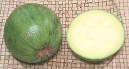
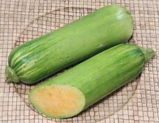
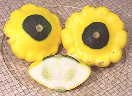

SAFARI
Users
General & History
Squash have been cultivated in Central America for as much as 10,000 years, and in South and North America also from prehistoric times. They are one of the three complimentary crops Native Americans planted together, corn, beans and squash. This combination provides complete nutrition. In particular, squash seeds are high in protein, dietary fiber, niacin, iron, zinc, manganese, magnesium and phosphorus, and also a good source of riboflavin, folate, pantothenic acid and potassium.
There are two broad categories of squash:Summer Squash:
Thin skinned squash picked before full maturity. They are full of pulp and seeds inside, never hollow. They do not mature into winter squash with a hard shell and thick flesh but rather turn yellow and either rot if not picked in time or dry out to a thin hard shell with seeds rattling around inside. Summer squash cook very quickly and are eaten skin-on. Some varieties are eaten raw in salads.Winter Squash:
Hard shelled squash, generally thick fleshed but hollow in the center where the seeds are. Some are also eaten immature as if summer squash, but most are picked when mature, and "cured" to further harden the shell. The shells are split, the seeds scraped out and the flesh is cooked, either cut from the shell or baked in the shell. Winter squash is often used in soup, either as chunks or as purée. The seeds of some varieties are used as a separate food product.
There are several species of squash.
C. maxima
includes most winter squash, for example Hubbard, Buttercup, Kabocha, and some Pumpkins. These are identified by their stems which are spongy and lack ridges.C. pepo
includes nearly all the common summer squash like zucchini and yellow crookneck, but also some winter squash, particularly the Halloween pumpkins (not pie pumpkins), spaghetti squash and acorn squash. The stems of these squash are deeply ridged.C. moschata
includes the butternut squash, the pumpkins used to make pumpkin pie, the West Indian Pumpkin, and a few lesser known varieties.C. mixta
is represented by the cushaw varieties.C. ficifolia
(figleaf squash), typified by the Xilicayote, it is the least grown of the squash species.
Varieties
There are many more varieties of squash than shown here but these are ones commonly offered in Southern California markets. The purely decorative varieties that show up around Thanksgiving, mostly C. Pepo, aren't included.
Note on photos:
Some of the orange fleshed squash are much more orange than shown in the photos. The Kodak digital camera used for many of the earliest photos did fine with the orange on the outside of squash but was totally blind to the orange of the inside, and its successor wasn't a lot better. The current Canon model is able to see this orange color. There are still a few older photos that haven't been replaced yet.Acorn Squash
[#4750/51/52; C. pepo]
This popular winter squash is available year round throughout North America.
It's Generally a very dark green with an orange patch where it rested on the
ground (#4750) but White (#4752) and Gold (#4751) varieties are also
recognized. See also the Carnival Squash which
is basically a variegated acorn squash. This squash is popular for baking,
stuffing and soup, but don't overcook or it can become mushy. The green
photo specimen was 4-5/8 inches in diameter and weighed 1-1/2 pounds.
Details and Cooking.
Ambercup
[C. maxima]
A cross between the Buttercup and
Golden Hubbard squash, the Ambercup looks like a small
pumpkin and generally weighs around 2-1/2 pounds. An exceptionally sweet
winter squash, it's considered one of the finest for eating. This squash
has an extraordinarily long storage life. I have not, however, seen it
here in Southern California.
Photo © i0152.
Banana Squash
 [C. maxima]
[C. maxima]
Growing to about 30 pounds, this is one of the largest squash, so it's
generally sold cut into pieces. The photo specimen was probably over 18
inches long and probably weighed around 16 pounds. As the name suggests
it's a long narrow squash but is more likely pink, gray or even dark gray
rather than yellow. The flesh of this squash is pleasant, sweet and
actually quite tasty raw so don't overcook it.
Buttercup Squash
[C. maxima]
Not to be confused with the popular Butternut Squash, Buttercup is related to the Turban Squash and has a bulge on the bottom but not as prominent as on the Turban. The photo sample, which exhibits the classic buttercup block shape with bulge on the bottom, was 6-1/2 inches diameter and weighed 2-7/8 pounds. This squash is not particularly meaty but it has very large seeds good for roasting.
Buttercup is not common commercially in Southern California but some
show up in early October. It's a popular garden variety in other parts
of the country. The flesh is creamy orange (much more orange than in the
photo) and sweeter than most other winter squash but not as sweet as
Butternut. It can substitute for sweet potato in recipes and is excellent
baked the same as Acorn Squash.
Butternut Squash
 [Butternut Pumpkin (Australia); C. moschata]
[Butternut Pumpkin (Australia); C. moschata]
This medium size (2 to 5 pounds) bottle shaped winter squash
has very sweet orange flesh. The flavor is described as somewhat like
sweet potato, and it can substitute for sweet potato in recipes. It's
one of the most widely available squash in North America, appearing in
most produce markets and supermarkets all year.
Details and Cooking.
Carnival Squash
[#3142, C. Pepo]
Basically a colorful Acorn Squash with similar
characteristics but listed separately here because it's always sold as
"Carnival", never as "Acorn". It should show a significant amount of green -
if it goes all orange it's probably beyond its peak flavor. See
Acorn Squash for cooking details.
Cassabanana
[Casbanan, Sikana, Musk Cucumber; Sicana odorifera]
This "squash" doesn't actually belong here, being of genus Sicana,
but as the only Sicana species we haven't anywhere else to put it,
and it belongs to the same family and tribe as squash. It is grown in the
hotter parts of Latin America and by Cajun people in the far south of
the United States - it needs considerable heat to ripen. Unripe it can
be cooked as a vegetable, but it is most valued for the ripe fruit,
which can be up to 24 inches long. The ripe flesh is aromatic with a
sweet melon-like taste. It is eaten raw and made into preserves. The
ripe flesh is always orange, but the skin may be orange, or as purple
as an eggplant depending on variety.
Watercolor by E. André 1890 US copyright expired
.
Chayote
[Vegetable Pear, Mango squash (English); Christophene, Cho-cho, Tayota (Caribbean); Mirliton, Merliton (Cajun, Creole); Choko (Australia); Chouchou (Africa); Sayota (Philippine), Gayota (Latin America); PLU #4761, Sechium edule]
Pronounced chy-O-tay, this vegetable is technically not a squash because it belongs to genus C. Sechium not C. Cucurbita but we put it here because it's normally called a squash and because there isn't any other place for it.
An odd squash it is - it looks like a giant seed. Each "squash" consists of a very large embryo within a smooth but very thin seed coat and a thick layer of flesh over that. A notch is left at one end through which the seed sprouts. Native to Central America, chayotes are now grown worldwide. It is quite popular in India and Southeast Asia but the two biggest exporters are Costa Rica (worldwide) and Veracruz Mexico (to the U.S.).
The photo shows two regular Chayotes, which average about 3 inches
across, 4-3/4 inches long and weight about 9 ounces each. There is also a
smaller rounder variety with a dark green skin that has better flavor but
is very rarely seen here. There are also yellow varieties (Perulero)
and very dark green ones (Guisquil) grown in Guatemala. The big 2
pound spiky chayote in the back has excellent flavor, but you won't see
them in most regions. Grocery people hate them because they'll stab you
right through bags and lightweight gloves. Food writers have been
endlessly puzzled by early reports that the chayote was "like a
porcupine" because they were unaware of this variety, or other spiky
varieties from Central America. Shoots and tender leaves are also edible
and are a common vegetable in Taiwan, the Philippines and Thailand.
The elongated root tubers are starchy and also edible.
Details and Cooking.
Chilacayote
- see Xilicayote.Cushaw Squash
[Gooseneck Squash, C. mixta]
Cushaw squash are grown mainly by home gardeners rather than commercially
- but I found the photo specimen in the Autumn, grown by a Southern
California producer of mainly decorative squash. They are characterized
by a bulbous body topped by a long, often curved neck, which may be thick,
thin or bulbous. A number of varieties are available, white, green
and striped, and some can grow to around 15 pounds. The photo specimen
was a green and white striped variety with deep orange flesh which is
one of the most popular, and considered a good cooking squash. It was
13-3/4 inches long, 7 inches diameter and weighed 6 pounds 4 ounces.
1 named it "Goosey" and let it dry out. It sits upright in a small bowl.
Delicata Squash
[Sweet Potato squash, Peanut squash, Bohemian squash; C. pepo]
This small, very sweet winter squash is seasonably available in
supermarkets in Southern California, The photo specimen was 6-1/4 inches
long, 3-1/2 inches in diameter and weighed 1-1/4 pound, a bit above
average. The skin is cream color with green stripes but when over-ripe it
is yellow with orange stripes. This recently reintroduced heirloom
variety is one of the few winter squashes with skin thin enough to be
eaten. It is similar to the Sweet Dumpling squash
except for shape.
Eight Ball Squash
 [Tondo di Piacenza, Round Zucchini, C. pepo]
[Tondo di Piacenza, Round Zucchini, C. pepo]
Very Zucchini like despite its different shape. It's
firmer and less seedy than Zucchini but interchangeable in recipes (unless
shape is an issue). Not a standard supermarket squash but often available
at produce markets here in Southern California. The photo specimens are
quite dark, but varieties the same color as Zucchinis are also common.
Gold Nugget
[Oriental Pumpkin, C. maxima]
A modest size winter squash ranging from 1 to 3 pounds with thick orange
flesh. It turns from a bright shiny orange to a dull orange when ripe.
These can be cooked whole (pierce a couple small holes into the seed
cavity) or cut in half lengthwise and cooked cut side up. See
Acorn Squash for method.
Hubbard Squash
[C. maxima] A family of large squash weighing up to 30 pounds that are generally teardrop shaped or may be pointed at both ends. Originally these had a warty skin but most sold today are smooth. One warty version still sold is Chicago Warted Hubbard. These squash are very durable and can be kept up to 6 months if properly stored (50°F, 70% humidity, stems removed).
Gray Hubbard Squash[C. maxima]
This squash becomes available in September in Southern California. This
variety is a little different from the ones I see in photos from other
parts of the country in that it isn't at all pointy at the flower end.
The photo specimen was 7-1/2 inches in diameter and weighed 4-1/4
pounds.
Green Hubbard Squash[C. maxima]
A friend of mine grows these every year in Altadena, CA, very
successfully, but has to grow them in a big cage to protect them from
deer. The photo specimen was 13-1/2 inches long and weighed just a
shade over 7 pounds.
Golden Hubbard Squash[C. maxima]
This squash becomes available in September in Southern California in
sizes from 3 to 20 pounds. It is quite warty and distinctly pointy at
both ends. The photo specimen was 6-3/4 inches in diameter, 11 inches
long and weighed 4-1/2 pounds.
|
Kabocha Squash
[Japanese Pumpkin (Australia / New Zealand); Auyama (Spanish); Fak Thong (Thai); Danhobak (Korea); Cambodia Abóbora (Portugal); Kabocha, Bobora (Japan); Red Pumpkin (India); Cucurbita maxima]
This excellent winter squash is what you want for recipes calling for
"pumpkin". This applies worldwide. Kabocha was taken from Cambodia to Japan
by Portuguese sailors in 1541 - "Kabocha" is Japanese for "Cambodia". They
may have come to Cambodia from India, where closely related "pumpkins" are
very popular to this day. They may range from 1-1/2 to 8 pounds, but average
around 2-1/2 pounds in markets here in California. These squash are now grown
as far afield as South Africa, Tasmania and Chile. Most of the crop from
California, Colorado, Tonga and New Zealand is exported to Japan.
Details and Cooking.
Kamo Kamo Squash
[Kumi Kumi pumpkin; C. pepo]
This is the traditional squash of the Maori people of New Zealand, at
least traditional since Europeans brought squash to the islands. It is
a double duty squash, suitable as a summer squash when young, and as a
winter squash when fully ripe. Ripe, it will have an extremely hard shell,
and excellent keeping properties, up to a year under the right storage
conditions. It is an excellent eating squash either unripe or ripe.
The photo specimen was 5-1/4 inches diameter and 3-3/4 inches high,
weighing 1 pound 9-1/4 ounces.
Korean Squash
 [Put Hobak (Korean); Early Bulam (Korea); Green Ball, Avocado Squash; C. moschata]
This is actually a "winter squash", but it is generally eaten immature,
as if a summer squash. In this state it is firmer and sweeter than
Zucchini, They grow up to about 4 inches in diameter and may be spherical
or sort of avocado shaped. They are also edible as a winter squash.
This squash is fairly interchangeable with the Aehobak, or
"Korean Zucchini". The photo specimens were a little over 3 inches diameter
and weighing 9 ounces each.
Details and Cooking.
Korean "Zucchini"
 [Aehobak (Korean lit Baby Squash); C. moschata]
This squash, very popular in Korea, is actually a "winter squash", but it is generally eaten immature, as if a summer squash. It is often called "Korean Zucchini", but color, taste, and texture are significantly different from Zucchini. They are juicier, slightly sweet, and taste lightly of Butternut or Acorn Squash.
These are getting fairly common in the Korean markets here in Southern
California, and are being grown commercially in Mexico. They are packaged
in a shrinked-on plastic sleeve. The photo specimens were 10.5 ounces,
7 inches long and 2 inches diameter and purchased for 2021 US $2.99 each.
Details and Cooking.
Marrow Squash
[Vegetable Marrow, C. pepo var. ovifera]
A squash related to the Zucchini grown in
England. Unlike the zucchini it has a rather firm shell and a soft seed
mass which is scooped out. They are described as "Overgrown when picked,
insipid when cooked". Due to bland flavor they are most often stuffed
with meat mixtures. They can grow to 30 pounds, but are generally
harvested much smaller. While formerly quite popular in England, they
are being displaced by the Zucchini (English "Courgette") as the English
slowly learn to cook.
Photo by Dbfirs distributed under license Creative Commons
Attribution-ShareAlike v4.0 International.
Mediterranean Squash
[Lebanese squash, kusa (Arabic), C. pepo]
Similar to Zucchini but lighter in color, shorter,
less evenly cylindrical, and a little lighter in flavor. Pretty much
interchangeable with zucchini in recipes, unless shape is an issue.
This squash is very common now in Southern California produce markets,
and while it comes in lighter colors, the photo shows the variety common
here. The largest of the photo specimens was 6 inches long, 2-1/4 inch
in diameter and weighed 8 ounces.
Moroccan Squash
This was my favorite squash. Unfortunately, the grower I bought them from suddenly broke up with his wife and moved back to Chicago. I have not yet been able to find seeds for this variety. I have purchased them up to 8-1/2 inches tall and 8 inches diameter, weighing 8 pounds 10 ounces. They keep well and the thick, intensely orange flesh has excellent flavor.
Opo Squash
- not a squash, see Bottle Gourd.
Pattypan Squash
[White Squash (Australia), scallop Squash, Custard Marrow (England), Custard Squash, pâtisson (French), Cymling, C. Pepo]
This common summer squash comes in regular light green, white and yellow
varieties. Due to its shape it's often hollowed out and used for stuffing,
sometimes with its own pulp mixed with other ingredients. This is a very
tender squash with definite sweetness and I consider it among the best
for use raw in salads and on vegetable plates. Its high ratio of shell
to seed mass helps it hold together well when cooked. The photo specimen
was 3-3/4 inches diameter, 1-7/8 inches thick and weighed 5-3/8 ounces.
Pumpkin
Pumpkin is a name used loosely for any winter squash that is roughly spherical. All three of the major squash species have representatives that are called "pumpkin".
Pumpkin[Halloween Pumpkin; C. pepo] This winter squash is bright orange and variously sized to around 25 pounds. It has shallow sutures and relatively thin flesh. Some of the smaller white pumpkins are C.pepo but the larger whites are C.maxima. This Pumpkin is not for Cooking. Seed catalogs say these
are good for pies, but professional growers, packers and pie manufacturers
say "Absolutely No"! The result will be watery, fibrous, and bland - hardly
worth eating. The photo is of my Halloween pumpkin from 2006, taken in
April 2007. It sat proudly on my front porch until the first week of
June.
"Pumpkin" (Worldwide)[Cucurbita maxima] Yes, this is just a Kabocha Squash, but outside of North America, this
is what folks expect a "pumpkin" to be. This excellent winter squash is
what you want for recipes calling for "pumpkin". This applies worldwide.
They may range from 1-1/2 to 8 pounds, but average around 2-1/2 pounds in
markets here in California. In North America, your main option to the
Kabocha is the Castile Pumpkin, or the
Hubbard Squash which is much less common here
in Southern California.
Details and Cooking.
Red Pumpkin[Lal Bhopla (Marathi); Kaddu (Hindi); Kumbalkai (Kannada); Gummadikaya (Telugu); Parangikai (Tamil); C. maxima] This is the favorite "Pumpkin" in much of India. It is very closely
related to the Kabocha, which makes a fine
and very available substitute. While the Kabocha is green on the outside,
so are many "Red Pumpkins" sold in India - they vary from green through
orange, to yellow depending on cultivar. They are all the same color as
the Kabocha on the inside.
Photo by George Chernilevsky contributed to the Public
Domain.
Dickinson Pumpkin[C. moschata] This is your pumpkin pie "pumpkin". A proprietary cultivar of this
squash is grown by farmers under contract to Libby's, and used for their
canned "100% Pure Pumpkin", which holds about 89% of the canned pumpkin
pie filling market. They are a light tan color on the outside but the
thick, dry flesh is intensely orange on the inside. The photo specimens
are actually C. moschata cultivar polianyn grown in Ukraine,
but side by side you wouldn't be able to tell them from the Dickinsons
used by Libby's. Perhaps they are from bootlegged Dickinson seeds.
Photo by Zenon Sych distributed under license
Creative Commons
Attribution-ShareAlike v4.0 International.
Castile Pumpkin[Calabaza de Castilla; C. moschata] While the Dickinson's used by Libby's are a proprietary cultivar, this is a widely available "pie pumpkin" you can use at home. It's generally light tan or grayish on the outside but the thick, dry flesh is intensely orange on the inside. These pumpkins have deep sutures in the skin and weigh up to 20 pounds, but the photo specimen was 10-3/4 inches diameter, 6 inches high and weighed 11-1/2 pounds. Some stores sell them cut into smaller chunks. Commercial varieties include Buckskin, Chelsey and Kentucky. Local
varieties are popular in Mexico and the Caribbean. Mochatas are also
popular in Japan.
Mexican Pumpkin[C. pepo]
This squash is grown in Mexico primarily for its large seeds (Pepita),
which are very popular roasted as a snack. The seeds are also essential
in many recipes, particularly Moles (sauces). The photo specimen was
7-1/2 inches diameter and weighted 3 pounds 3 ounces.
Giant Pumpkin[C. maxima] These are the pumpkins you grow to win pumpkin growing contests.
The photo specimen, grown near Port Elgin, Canada, was 1678 pounds (768 kg),
and growers are trying for a ton. The most popular contestant is Atlantic
Giant, which is orange, but giant C.maxima come in various shades of green,
gray, yellow, orange, and white. Modest size maxima pumpkins are used for
food worldwide, and several are listed on this page.
Photo by Whpq distributed under license Creative Commons
Attribution-ShareAlike v3.0 Unported.
|
Red Kuri Squash
[Orange Hokkaido, Baby Red Hubbard, Uchiki Kuri (Japan), #4774, C. maxima]
A hard shelled winter squash with firm yellow flesh. The flavor is mellow
and described as tasting somewhat like chestnuts. The photo specimen was
5-1/2 inches in diameter and weighed 1 pound 11 ounces. They are available
year round but become common in Southern California produce markets in
September.
Scalopini
[C. pepo]
The name "scalopini" is often used as a generic name for patty pan
squash, but more specifically refers to a very dark green hybrid variety
that is lightly scalloped and quite high for a patty pan. It has a
sweet, somewhat nut-like flavor, and a good texture for using raw in
salads. The largest of the photo specimens was 3-3/4 inches diameter
and 2-1/2 inches high, weighing about 8 ounces.
Spaghetti Squash
[Vegetable Spaghetti, C. pepo]
This winter squash variety is unique in that when cooked the flesh separates into crisp spaghetti-like strands. The example shown was about 8 inches long, 5 inches diameter and weighed a little over 4 pounds.
The main variety is yellow as pictured, but an orange variety has been
developed that is somewhat sweeter. In a University of Florida consumer
test, consumers preferred the appearance of the orange variety but preferred
the taste of the traditional yellow variety.
Details and Cooking.
Squash Blossom
[C. pepo]
Squash Blossoms are most used in Mexican and Italian cuisines. Male
flowers, most often from Zucchini, are used as these will not produce
squash. They may be stuffed, usually with light cheeses, and fried or
baked. They are also used in soups and pasta sauces. They are valued
for their sweet floral flavor and aroma, as well as their conveniently
large size and stuffability. They are generally around 3-1/2 to 4 inches
long, not counting the stem. These were purchased from a large
multi-ethnic Market in Los Angeles (Altadena, actually).
Squash Greens
[C. pepo?]
These greens can occasionally be found in Philippine markets here in
Los Angeles (Filipinos use many kinds of greens not commonly used
elsewhere). My local market in Eagle Rock puts out greens like these late
on Friday afternoon or early Saturday for the heavy weekend shopping, as
they are very perishable. I do not know precisely what kind of squash
these greens came from, but I was not too impressed with these as their
fuzziness doesn't go completely away upon cooking.
Sunburst Squash
 [C. pepo]
A common summer squash which can be use anywhere summer squash is called for. This is a yellow version of the Pattypan, listed separately here because it's always sold under the Sunburst name. Dark green with light broken stripes right up until ready to harvest, it then turns yellow and is at its peak when there's still some green in the center.
In common with yellow varieties of other green vegetables, the flavor
is a bit bland and it is definitely less sweet than the regular green
pattypan. Use it where you want a decorative accent but choose the green
for flavor. The right photo specimen was 3-5/8 inches diameter, 2-1/8
inch thick and weighed 4-3/4 ounces. This squash is very tender but its
high ratio of shell to seed mass helps it hold together when cooked.
Sweet Dumpling Squash
[C. pepo]
Due to its small size and shape this is a favorite squash for stuffing
and roasting whole for individual portions. Available September through
December it is sweeter than most C. pepo squash. The photo
specimen was 4-1/4 inches diameter, 3 inches high and weighed just under
1 pound but they are often smaller. This squash is very similar to the
Delicata except for shape.
Yellow Crookneck Squash
[C. pepo]
Practically the definitive summer squash until the coming of the
Zucchini, this squash can be used in just about any
summer squash recipe that doesn't require the zucchini's cylindrical
shape. As with other yellow squash, the flavor is a bit bland compared
to the green zucchini. The photo specimen was 6-1/2 inches long, 2-5/8
inches in diameter and weighed 9-3/4 ounces.
Tromboncino
[Zucchetta, Zucchino rampicante, Climbing zucchini, Climbing crookneck, Trombolino d'albenga, Trombetta, Serpentine squash; C. moschata]
Originally from Liguria in Italy, this is a popular summer squash there
and around the world. It is used mainly as a summer squash because when
mature it is a little more watery than other winter squash. Flavor is
very good, a little lighter than dark green Zucchini, and it can be used
wherever a summer squash is called for. The photo specimen was about
19 inches long, 3 inches in diameter and weighed 1 pound 6 ounces. The
shaft was about 1-1/4 inches diameter.
Turban Squash
 [C. maxima]
[C. maxima]
Related to the Buttercup Squash this squash is seen
at various times of the year in Southern California but becomes quite
common in September. It is often used as an autumn decoration, but it's
quite edible with orange flesh described as having a somewhat hazelnut
flavor. The specimen in the photo, viewed from the flower end, was
8-1/2 inches in diameter, 6 inches high and weighed 5-1/3 pounds.
West Indian Pumpkin
[Giraumon, (Caribbean); Joumou (Haiti); Calabaza (Spanish, not unique); Auyama (South America, Caribbean, not unique); Ayote (Central America); Kalabasa (Filipino); C. moschata]
This is a very popular squash in the Caribbean and in the Philippines. It is also grown in the tropical Americas. There are various cultivars, some more squat than the one in the photo, similar to a Kabocha, and color also varies. As Joumou, it is very important to the national soup of Haiti, also called Joumou.
This squash is not common in North America, however, the
Kabocha is considered a very suitable
substitute, even though it is C. maxima, not C. moschata.
Kabocha is also often called Calabaza or Auyama in regions that use those
names.
Photo by Fpalli distributed under license Creative Commons
Attribution-ShareAlike v3.0 Unported.
Xilicayota
[Chilacayote (Mexico); Ugboguru, Ugbogiri, Anyu (Igbo, Nigeria); Fluted Pumpkin (Nigeria only); Cucurbita ficifolia (sometimes called C. pepo)]
This squash originated either in Mexico or Peru, but is now also grown
in Southern California, Southeast Asia and all through the warmer parts
of Central and South America, and even in Africa. The photo specimen was
11 inches long, 8 inches in diameter and weighed 16 pounds.
Details and Cooking.
Zucchini
[Italian squash; Courgette (UK); Cocozelle (Italy); C. pepo]
Seeds for this summer squash came from Italy to the Italian farming communities of California. Growers here marketed it as Zucchini ("little squash") and it became popular in trend setting Los Angeles restaurants. From there it spread to the rest of the world, and "Zucchini" has pretty much replaced the original name, Cocozelle - except for the British who insist on calling it a Courgette.
Pictured are very young squash, much in demand for Mediterranean and
Middle Eastern cooking, a yellow variety and a medium size. Left to grow
they could all have become the monster zeppelins found in back yard gardens.
The small are 6-1/2 inches long, 1-1/8 inch diameter and weigh a shade over
3 ounces. The medium one was 8-1/2 inches long, 1-3/4 inches in diameter
and weighed 9-1/2 ounces.
Details and Cooking.
Health & Nutrition
Toxicity:
There is some concern for eating Zucchini and some other summer squash raw due to content of toxic cucurbitacins. Eating raw with proper washing is not a problem with commercially grown squash. Squash from other sources could be a problem. The key here is bitterness. Cucurbitacins, like many other toxins, are very bitter, so if you bite into a raw Zucchini or other summer squash and it is bitter, best to discard.Benefits:
Squash, both Summer and Winter varieties, are clearly beneficial to health, low in calories but strong in both vitamins and minerals. They are considered excellent for eye health due to high Vitamin A content.Here are some figures for typical Winter (Butternut) and Summer (Zucchini) squash. Both columns are for 1 cup of cooked squash (205 grams for Butternut, 223 grams for Zucchini). RDI = Reference Daily Intake.
| Nutrient | Butternut | Zucchini | |
|---|---|---|---|
|
Calories:
Carbs: Protein: Fat: Fiber: Vitamin A: Vitamin C: Vitamin E: Vitamin K: Thiamine (B1): Niacin (B3):' Pyrodoxine (B6): Folate (B9): Calcium: Magnesium: Potassium: Manganese: Copper: Iron: Antioxidants |
82
22 grams 2 grams 0.2 gram 7 grams 457% RDI 52% RDI 13% RDI 10% RDI 10% RDI 13% RDI 10% RDI 8% RDI 15% RDI 17% RDI 18% RDI 15% RDI High |
17
3 grams 1 gram 1 gram 2 gram 40% RDI 14% RDI 9% RDI 5% RDI 7% RDI 8% RDI 10% RDI 13% RDI 16% RDI 8% RDI High |